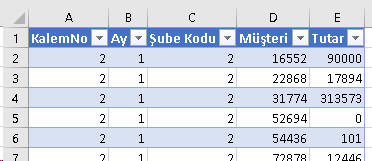
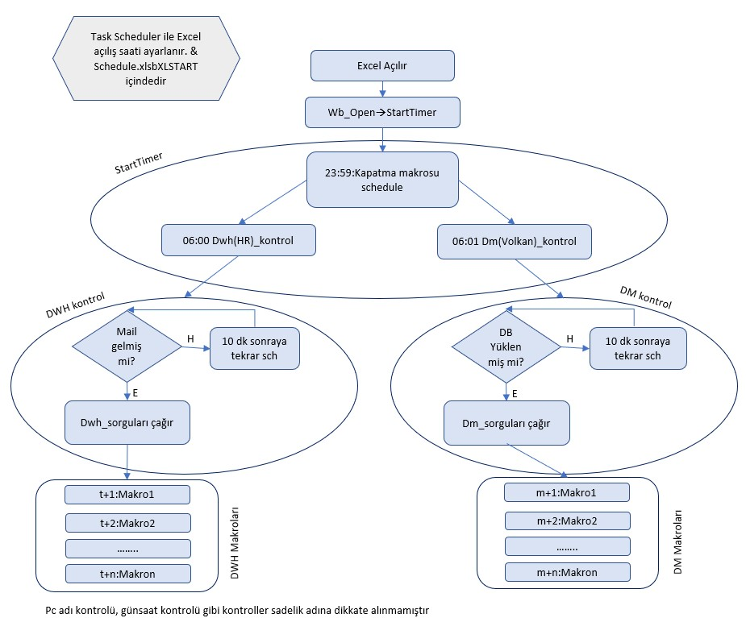
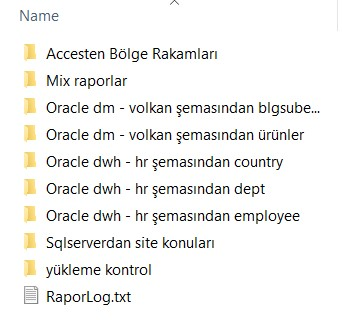
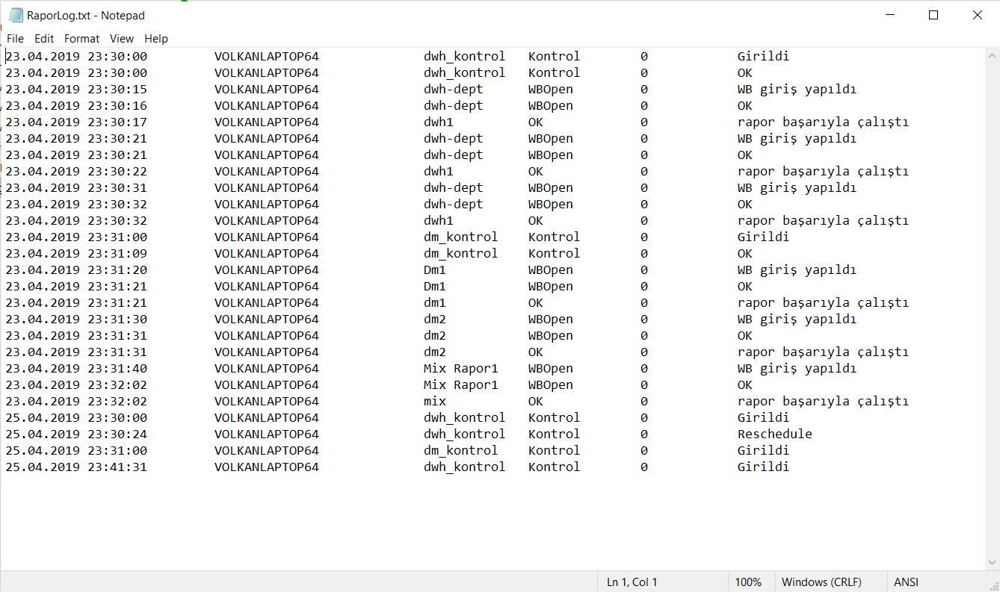

| VBAMakro |
Diğer Uygulamalarla iletişim |
4 |
Connection, ListObject
ve QueryTable nesneleri
Bu bölümde, DAO ve ADO'dan yöntem olarak biraz farklılaşan,
refreshlenebilir bağlantı
tekniklerine değineceğiz. Bu sayfada anlatılanlar için
Dış veri
kaynaklarıyla çalışmak sayfasında
anlatılan konuları iyi bilmek gerekiyor. Eğer bunları bilmiyorsanız
öncelikle o sayfayı incelemenizi sonra buraya gelmenizi tavsiye ederim.
Örneklerdeki kodların olduğu dosyayı ve veritabanını
buradan
indirebilirsiniz.
Giriş
Önceki bölümde DAO ve ADO ile bir
veritabanına bağlanıp nasıl veri çekileceğini gördük. Bunların ortak noktası datayı
değişkenler/diziler içinde depolayarak veya metodlar aracılığı ile Excele
yapıştırmak şeklindeydi. Bu yöntemlerle elde edilen veri, Data menüsünden veya sağ
tıklanarak refreshlenemez. Yani DAO/ADO refresh yapılamayan ve statik data
getiren yöntemlerdir. Ancak ilgili kod tekrar çalıştırılarak(ilgili kod bir
butona atanabilir), güncel data getirilebilir, yani dolaylı yoldan bir nevi
refresh uygulanabilir. Refresh yapılabilirliğin VBA açısından önemi
Refresh ve RefreshAll
metodlarının kullanım kolaylığındandır.
Excel’den veritabanlarına
ulaşmanın bir yolu da MS Query veya Data Connection Wizard aracılığı ile
refreshelenbilir bir Tablo(VBA karşılığı ListObject) yaratmaktır. Bu kısımda
bu yöntemlere bakıyor olacağız, tabi sadece VBA ile ilgili kısmına. Bu tür
bağlantı yaratım tekniklerini biliyor olduğunuzu vasrsayacağım, bilmeyenler
buradan
detay bilgi edinebilir.
Refreshlenebilir bir dosyayı ilk kez oluşturma işini
genelde Excel içinden manuel yaparız. Ancak bazı durumlarda VBA ile de
yapmamız gerekebilmektedir. Yine de ilk Connection String bilgilerini v.s ilk
başta Excel’den yapmak daha kolaydır, hatta macro recorder ile oluşan kodu
alıp, aradaki gereksiz kodu temizledikten sonra VBA kodunu
hazırlayabilrsiniz.
Bunun refresh işlemini ise VBA’e bırakabiliriz, tabiki manuel olarak refresh
edilebilir ancak bu sayfada VBA ile bunun yapılış yollarını öğreneceğiz.
Zira bu bilgiler schedule işlemlerinde kritik öneme sahiptir.
Önemli Classlar
DAO ve ADO’dan farklı olarak bu sefer herhangi
bir library’yi referans olarak eklememize gerek bulunmamaktadır. Bunun
yerine Excel'in açılmasıyla mevcut bulunan 3 sınıf/nesne üzerinde çalışıyor olacağız.
- Connection(s) sınıfı: Varolan bağlantılarla ilgili işlem yapılmasını veya
bilgi edinilmesini sağlar.
- ListObject(s) sınıfı: Yeni connection
kurmamızı sağlar. Nihai liste Table şeklindedir.
- QueryTable(s) sınıfı:
Yeni connection kurmamızı sağlar. Nihai liste
Table şeklinde
değildir.
Şimdi bunlara detaylıca bakalım.
Connections sınıfı
Connections’ın sonundaki s harfinden bunun bi collection olduğunu
anlıyoruz. Normalde hemen her collectiona ait bir de sonunda “s” olmayan
nesnesi vardır, Workbooks/Workbook gibi. Ancak Connections için bu tipte bir
nesne yok. Bununla ilgili hiçbir kaynak bulamadım ancak benim tahminim tek
bir tür connection olmaması. Bizim burada ilgileneceğimiz nesne
WorkbookConnection’dır. WorkbookConnection nesnesi tüm dış bağlantıları
yöneten nesnedir. Bunun da aşağıdaki gibi kendi içinde alt türleri vardır:
(Yandaki
rakamlar Type propertysinin değeridir.)
2, xlConnectionTypeODBC
1,
xlConnectionTypeOLEDB
4, xlConnectionTypeTEXT
5, xlConnectionTypeWEB
Diğer bikaç
tip daha var,
ama onlar bizi şu aşamada hiç ilgilendirmiyor.
Connection’ların güzelliği bi kere yaratıldıklarında Excel içinde
depolanabilir olmalarıdır. Connectionlar, ayrı bir connection dosyasında da
tutulabilir. Bunlar genelde ODC uzantılı dosyalardır. Ama biz bu
şekilde çalışmaycağız, Excel içinde depolayacağız. Daha önceden bahsettiğim
gibi bazen de direkt kodun içinde connection yaratımı olabilir, dolayısıyla dosya
ilk açıldığında connection yoktur, onu yaratan kod tetiklenince oluşur. Her
ne kadar çok sık ihtiyacımız olmayacaksa da bu yöntemi de göreceğiz.
Yeni yaratım
Her bir QueryTable, ListObject ve harici dataya başvuran bir
PivotCache yaratıldığında yeni bir WorkbookConnection nesnesi yaratılır.
Bu şekilde dolayı olarak yaratılan connectionlara biraz aşağıda bakacağız.
Sonradan Existing Connections içinden kullanılmak üzere standalone(tek başına duran)
WorkbookConnection nesnesi de yaratılabilir, ama buna çok gerek olacağını
sanmıyorum, o yüzden yeni yaratım yerine varolan connectionlar üzerinde
duracağız.
ConnectionString
Bir connection’ın en önemli öğesi
Connection Stringdir. DAO ve ADO’da gördüğümüz gibi bu öğe, dataya nasıl
bağlanılacağını belirten yönergeyi içerir. Bunun içinde genellikle bağlantı
türünün ODBC/OLEDB
mi olduğu, Driver/Provider’in ne olduğu, varsa user ve şifreler ve diğer
parametreler bulunur.
Çeşitli veritabanlarına bağlanma yöntemlerini
www.connectionstrings.com adresinden bulabilirsiniz.
Connection'a Erişim ve Varolan
Connection'ı Editleme
Bir kez daha belirtmek gerekirse biz daha çok Connectionların yeni
yaratımlarından ziyade mevcut Connectionların özelliklerini okuma/değiştirme
işlemleri yapacağız.
Connection’ın kendisine Connections koleksiyonuna
index veya isim vererek ulaşabiliyoruz.
Activeworkbook.Connections(1)
Activeworkbook.Connections("Query from PDWH_USR")
Connection’ın kendisini
elde ettikten sonra bunla ilgili işlemleri yapmak için genelde Connection’ın
tipine göre ilgili property’yi seçip daha çok bunun üzerinden işlem
yapıyoruz, Connection’ın kendisiyle pek bi işimiz olmuyor. Yani bağlantı
tipimiz ODBC ise Activeworkbook.Connections(1) yerine
Activeworkbook.Connections(1).ODBCConnection üzerinde işlem yapıyoruz.
Connection’ı kendisiyle ilgili olarak tek ihtiyaç duyacağımız bilgi
connection’ın tipidir. Yani ODBC ise farklı işler olsun OLEDB ise farklı
şeyler olsun demek için tip bilgisine ihtiyaç duyarız. Bunları da yukarıda
görmüştük; ODBC için tip xlConnectionTypeODBC olup bunun nümerik değeri
2'dir. Buna property Activeworkbook.Connections(1).Type
şeklinde ulaşabiliriz
Bu tip bilgisine ulaştıktan sonra connection tipine göre ilgili property
seçilir: Activeworkbook.Connections(1).ODBCConnection gibi.
Bunun da sadece
birkaç propertysine ihtiyaç duyacağız. En önemlisi, bize ConnectionStringi
veren Connection propertysi’dir. Gördüğünüz gibi ConnectionString diye bir
property yok onun yerine Connection var: Activeworkbook.Connections(1).ODBCConnection.Connection
Mesela connection tipi ODBC ise ConnectionString ... olsun demek için
aşağıdaki kodu yazarız.
If Activeworkbook.Connections(i).Type = 2 Then
Activeworkbook.Connections(i).ODBCConnection.Connection="....."
End If
Bu
ConnectionString’i elde etmenin bir yolu daha var, bunu ilgili kısımda
ayrıca göreceğiz ancak ön bilgi adına aşağıda veriyorum,
QueryTable'lar üzerinden:
ActiveSheet.ListObjects(1).QueryTable.Connection 'access, oracle v.s
'Veya text/web connection ise Doğrudan QT üzerinden(web ve txt con için)
ActiveSheet.QueryTables(1).Connection
Refresh işlemleri
Workbook
nesnesinin RefreshAll adında bir metodu vardır, ilgili dosyadaki tüm
bağlantıları (ve pivot tabloları) refreshler. Bu bazı durumlarda işimizi
gören pratik bir yöntemdir. Özellikle bu metod, kodumuzun son satırı yer
alıyorsa. Mesela uzunca bir işten
sonra ActiveWorkbook.RefreshAll derseniz, dosyadaki tüm bağlantılar
sorunsuzca refreshlenir.
Ancak(aslında büyük bir ancaaaak), bu metod
asenkron(asynchronous) bir metoddur.
Yani, refresh işlemleri henüz bitmeden sonraki satırlar
okunmaya devam edilir. Bu da her zaman olmasa da bazen sorunlara
neden olur. Zira arkasından bir kaydetme işlem gibi bir işlem varsa
hatalara ve kitlenmelere neden olabilir.
O yüzden kodun son satırı olmadığı sürece
refresh işlemlerini connection nesnesi üzerinden(bir döngü içinde tüm
bağlantıları ele alacak şekilde) yapmayı tercih etmeliyiz,
workbook nesnesi üzerinden değil.
Böylece tüm bağlantılar refresh olana kadar beklemiş oluruz. Zira Connection
nesnesinin Refresh metodu, BackgroundQuery özelliğine
False atandığında
synchronous çalışır, yani bir sonraki satıra geçmeden önce
mevcut satır icrası beklenir.
Sub AlternatifRefreshAll()
'Önceki kodlar
For Each cn In ActiveWorkbook.Connections
cn.ODBCConnection.BackgroundQuery = False 'kodun synchronous işlemesini sağlar
cn.Refresh
Next
'Sonraki kodlar
End Sub
Örneğin aşağıdaki tabloda mevcutta bulunan kayıt
sayısını(listobjectin row sayısı) yazdırmak istiyoruz diyelim. Önce
mevcudu yazdıracağız, hemen arkasından DAO ile bir kayıt ekleyeceğiz
ve hemen arkasından tekrardan kayıt sayısını okuyacağız.

Bunun için kodumuzu şu şekilde hazırlarsak
Sub async_refresh()
Dim ws As Worksheet
Set ws = ActiveSheet
Debug.Print "Yeni kayıt öncesi:" & ws.ListObjects(1).ListRows.Count, Time
Call KayıtEkle 'Kayıt ekleme işini yapan prosedür
ActiveWorkbook.RefreshAll 'yaklaşık 15-20 sn çalışır
Debug.Print "Yeni kayıt sonrası:" & ws.ListObjects(1).ListRows.Count, Time
End Sub
Bunun çıktısı şöyledir:
Yeni kayıt öncesi:334 21:46:17
Yeni kayıt sonrası:334 21:46:18
Gördüğünüz gibi, uzun süren refresh işini beklememiş ve önceki kayıt
sayısı ile sonrakini aynı vermiş ve bunu 1 sn içinde yapmıştır.
Ancak güvenli yöntem ile çalıştırırsak,
Sub sync_refresh()
Dim con As WorkbookConnection
Dim ws As Worksheet
Set ws = ActiveSheet
Debug.Print "Yeni kayıt öncesi:" & ws.ListObjects(1).ListRows.Count, Time
Call KayıtEkle
For Each con In ThisWorkbook.Connections
con.ODBCConnection.BackgroundQuery = False
con.Refresh
Next con
Debug.Print "Yeni kayıt sonrası:" & ws.ListObjects(1).ListRows.Count, Time
End Sub
Sonuç şöyle çıkacaktır:
Yeni kayıt öncesi:336
21:47:57
Yeni kayıt sonrası:337 21:48:06
Görüldüğü üzere 9 sn'lik refresh işlemi beklenmiş ve kayıt
sayısının 1 arttığı gösterilmiştir.
"KayıtEkle" prosedürümüz de şöyledir.
Sub KayıtEkle()
Dim db As Database
Dim rs As Recordset
Set db = DAO.OpenDatabase("buraya dosya adresini yazın")
Set rs = db.OpenRecordset("Anadata", dbOpenTable)
rs.AddNew
rs.Fields(0) = 2
rs.Fields(1) = 1
rs.Fields(2) = 2
rs.Fields(3) = WorksheetFunction.RandBetween(1000, 2000)
rs.Fields(4) = WorksheetFunction.RandBetween(1, 1000000)
rs.Update
rs.Close
db.Close
End Sub
ÖNEMLİ: RefreshAll yapılması durumunda ortaya
çıkan sorunlar için birçok sitede önerilen DoEvents, Wait, Sleep
yöntemlerinin hiçbiri işe yaramaz. Bu işin tek çözümü budur. İlgilenenler
buradan da detay baklabiliriler.
ListObject ve QueryTable
Data erişim yolları
Excel’den dış dataya çeşitli yollardan ulaşabiliyoruz. Bunların türlerini
Excel ana menüsündaki
şu sayfadan ulaşabilirsiniz. Bizim için önemli olan
hangi yöntemle yaratıldığında (2013 ve 2016’da yeni gelen Get&Transform, New
Query yöntemleri dahil) nereler değişiyor, ne tipte bir bağlantı oluşuyor detayı.
Çünkü oluşan bağlantı tipinin ODBCConnection mı yoksa OLEDBConnection mı
olduğuna bağlı olarak kodlarımızda ayarlama yapmamız gerekcek.
Genel
olarak bakıldığında;
- MS Query her zaman ODBC yaratır
- Data_Conn_Wizard:(2016'dan itibaren Legacy)
ODBC DSN-->ODBC
Other/Advanced-->OLEDB
- Data_Import_Access:OLEDB
- Txt
import:TEXT
- SQLServer:OLEDB
- PowerQuery:OLEDB(Mashup)
NOT:ODBC’de CommandType her
zaman SQL’dir, yani xlCmdSql. OLEDB’de ise SQL olabileceği gibi doğrudan bir
tablo/query de olabilir.
ListObject ve QueryTable türleri
ListObject dediğimiz nesne aslında
Table sayfasından gördüğümüz Table
alanımızdır. Bu nesnenin Name özelliğine bakınca Table menüsündeki ismin
aynısını görürüz.(ListObject’in eski adı zaten TableList idi, sonradan
ListObject olmuş.)
İki tür listobject olabilir:
- Data bağlantılı: Böyleyse bunun QueryTable propertysi vardır, ve
refreshelenebilir.
- Data bağlantısız: FormatAsTable ile Table yapıp
uygulanmıştır. Bunun bir data bağlantısı yoktur. Querytable özelliği de
yoktur, dolayısıyla refreshlenemez.
Biz doğal olarak burada ilk tür
Listobject ile ilgileneceğiz.
QueryTable’a gelince, o her halükarda
refreshable data içerir. ListObject’deki gibi QueryTable’ın da iki türünden
bahsedebiliriz.
- ListObject ile ilişkili: Access, Oracle gibi
DB’lerden kurulan bağlantılar.
- ListObject ile ilişkisiz: Text ve Web
bağlantıları tek başına bulunan(standalone) QueryTable’lar üretir.
Excelde bir bağlantı kurduğumuzda bu bir text veya web bağlantısı değilse
ListObject ve QueryTable ikisi de otomatikman oluşur, ister VBA içinden
ister Excel menülerden oluşturmuş olalım farketmez. Yani VBA’de standalone
ListObject yaratsak bile ona eşlik eden QueryTable de yaratılmış olur.
ListObject’e eşlik eden QueryTable’lar Worksheet.QueryTables koleksiyonun
bir parçası değildir. Bunlara sadece ListObject.QueryTable özelliği ile
erişilebilir.
Access,Oracle veya SQL Server gibi DB bağlantılarında Listobject'in bir adı varken,
QueryTable'ın adı olmaz.(QueryTable'ın Name propertysi sadece text ve web queyler için
var)
Yani bir text bağlantısı(Standalone Querytable) ve bir Oracle
bağlantsı içeren bir dosyada şu sonuçları elde ederiz.
Debug.Print ActiveWorkbook.Connections.Count '2 (ikisi de)
Debug.Print ActiveSheet.ListObjects.Count '1 (Oracle)
Debug.Print ActiveSheet.QueryTables.Count '1 (Text)
Ama dosyamızda aslında iki tane QueryTable var, fakat bunlardan
biri Listobject'n query'si. Bunlarda ayrı ayrı ilgil Listobject'in
QueryTable özelliği ile ulaşaılabilir ama tek seferde hepsini
saydıracak bir Count özelliği yok, zaten buna gerek de yok,
Listobject sayısı kadar Listobjecte bağlı QueryTable sayısı vardır.
Yine mesela aşağıdaki kod bi Oracle bağlantısı olan dosyada hiçbirşey
yazmazken text bağlantısı olan bir dosyada QueryTable’nin adını yazar.
Sub LOQT()
Dim ws As Worksheet
Dim q As QueryTable
Set ws = ActiveSheet
For Each q In ws.QueryTables 'bu bize standalonelarınkini verir
Debug.Print q.Name
Next q
End Sub
Yeni yaratımlar
Yukarıda kısaca değindiğimiz data erişim yollarından biri
kullanılarak yeni bir bağlantı yaratabiliyoruz. Bu yeni yaratımlara çeşitli örnekleri aşağıda bulabileceğiniz gibi Makro Kaydetme aracı ile kendiniz de
görebilirsiniz. Tüm yapmanız gerekn Record Macro tuşuna bastıktan
sonra bağlantınızı kurmak ve sonrasında kodu incelemek. Tabi makro
kaydedeci gereksiz uzunlukta bir kod üretmektedir, zira tüm
parametrelere değer atamak gibi bir özelliği var bu aracın. Siz
burada gereksiz parametre atamalarını çıkarın, diğerlerine
otomatikman default değerleri atanacaktır. Array şeklindeki
CommandText'i de tek bir string olarak yazın.
Örneğin Access'ten MS Query ile bir bağlantı kurduğumuzda aşağıdaki gibi
bir kod oluşmakta
Application.CutCopyMode = False
With ActiveSheet.ListObjects.Add(SourceType:=0, Source:=Array(Array( _
"ODBC;DSN=MS Access Database;DBQ=C:\inetpub\wwwroot\aspnettest\excelefendiana\Ornek_dosyalar\Makrolar\vbadb.accdb;DefaultDir=C:\inetp" _
), Array( _
"ub\wwwroot\aspnettest\excelefendiana\Ornek_dosyalar\Makrolar;DriverId=25;FIL=MS Access;MaxBufferSize=2048;PageTimeout=5;" _
)), Destination:=Range("$A$1")).QueryTable
.CommandType = 0
.CommandText = Array( _
"SELECT Data.Bölge, Data.`Şube Adı`, Data.`Ürün Adı`, Data.`Aylık Gerç`" & Chr(13) & "" & Chr(10) & "FROM Data Data" _
)
.RowNumbers = False
.FillAdjacentFormulas = False
.PreserveFormatting = True
.RefreshOnFileOpen = False
.BackgroundQuery = True
.RefreshStyle = xlInsertDeleteCells
.SavePassword = False
.SaveData = True
.AdjustColumnWidth = True
.RefreshPeriod = 0
.PreserveColumnInfo = True
.ListObject.DisplayName = "Table_Query_from_MS_Access_Database"
.Refresh BackgroundQuery:=False
End With
Biz bunu maneul olarak yazmak istediğimizde aşağıdaki gibi
çok daha sade yazarız.
Sub yeni_access_LO_odbc()
Dim constr As String
Dim qt As QueryTable
constr = "ODBC;DSN=MS Access Database;DBQ=C:\inetpub\wwwroot\aspnettest\excelefendiana\Ornek_dosyalar\Makrolar\vbadb.accdb;DefaultDir=C:\inetpub\wwwroot\aspnettest\excelefendiana\Ornek_dosyalar\Makrolar;DriverId=25;FIL=MS Access;MaxBufferSize=2048;PageTimeout=5;"
' OLEDB versiyonu--> constr = "OLEDB;Provider=Microsoft.ACE.OLEDB.12.0;Data Source=C:\......."
Set qt = ActiveSheet.ListObjects.Add(SourceType:=0, Source:=constr, Destination:=ActiveCell).QueryTable
With qt
.CommandType = xlCmdSql 'recordmacro sırasında 0 yazar, aynen brakabilecğeiniz gibi manuel yazarken intellisense çıkar ve bunu seçersiniz
.CommandText = "select * from data" 'Record macroda otomatik oluşan Array yerine tek bir string içine yazarsınız
.ListObject.Name = "Acces bağlantı"
'Diğer öğeleri pas geçebiliriz, böylece default değerleri atanır
.Refresh BackgroundQuery:=False
End With
End Sub
Bu arada eğer dataya erişim yöntemi olarak Data>Get&Transform>From
Database diyip Access seçerseniz, üretilen kod biraz daha farklı
olmakta, zira burada Power Query devreye sokulmaktadır.
ActiveWorkbook.Queries.Add Name:="Data (2)", Formula:= _
"let" & Chr(13) & "" & Chr(10) & " Source = Access.Database(File.Contents(""C:\inetpub\wwwroot\aspnettest\excelefendiana\Ornek_dosyalar\Makrolar\vbadb.accdb""), [CreateNavigationProperties=true])," & Chr(13) & "" & Chr(10) & " _Data = Source{[Schema="""",Item=""Data""]}[Data]" & Chr(13) & "" & Chr(10) & "in" & Chr(13) & "" & Chr(10) & " _Data"
ActiveWorkbook.Worksheets.Add
With ActiveSheet.ListObjects.Add(SourceType:=0, Source:= _
"OLEDB;Provider=Microsoft.Mashup.OleDb.1;Data Source=$Workbook$;Location=""Data (2)"";Extended Properties=""""" _
, Destination:=Range("$A$1")).QueryTable
.CommandType = xlCmdSql
.CommandText = Array("SELECT * FROM [Data (2)]")
.RowNumbers = False
.FillAdjacentFormulas = False
.PreserveFormatting = True
.RefreshOnFileOpen = False
.BackgroundQuery = True
.RefreshStyle = xlInsertDeleteCells
.SavePassword = False
.SaveData = True
.AdjustColumnWidth = True
.RefreshPeriod = 0
.PreserveColumnInfo = True
.ListObject.DisplayName = "Data__2"
.Refresh BackgroundQuery:=False
End With
Biz şimdilik MS Query yöntemiyle ilerleyeceğiz. Zira birçok
kullanıcıda şuan için PowerQuery entegrasyonunun olmadığını
varsayabiliriz. Gerçi olsa da farketmez, kodlar büyük ölçüde aynı,
sadece connection strginlerinde küçük farklar sözkonusu.
Standalone bağlantı
Öncelikle standalone(kendi başına) bağlantılara bakalım.
Bu örneğe bakarken hali hazırda üzerinde bağlantı olan bir dosya
ile çalışmanızı tavsiye ederim. Bu dosya sizin kendinize ait bir
dosya olabileceği gibi en üstte benim linkini verdiğim örnek dosya
da olabilir.
Sub standalone_LO_QT()
'F8 ile tk tek çalıştırın
Dim ws As Worksheet
Dim qts As QueryTables
Dim qt1 As QueryTable, qt2 As QueryTable, yeniqt As QueryTable
Dim los As ListObjects
Dim lo1 As ListObject, lo2 As ListObject, yenilo As ListObject
Set ws = ActiveSheet
Set dest = ActiveCell
'1)*******QueryTable işlemleri************Bunlar standalone QueryTable'ler içindir.(Text dosyası gibi)
'1a)Mevcutlara erişim:Mevcutta standalone Querytable bulunan bir sayfada çalışın
Set qts = ws.QueryTables
Set qt1 = qts.Item(1) 'veya item kullanılmayadan doğrudan qts(1) yazılabilir
Set qt2 = qts("ExternalData_4") 'ismiyle de ulaşaibliriz
'1b)Yeni yaratım
Set yeniqt = qts.Add(connection:="TEXT;" & adres & "hatalog.txt", Destination:=dest)
yeniqt.Refresh
'!!!!!!!!!!!!!!!!!!!!!!----şimdi başka bir boş hücre seçin-----------!!!!!!!!!!!!!!!!
Set dest = ActiveCell
'2)*******standalone ListObject işlemleri*********(Access, Sqlserver, oracle v.s)
'2a)Mevcutlara erişim:Mevcutta listobject bulunan bir sayfada çalışın(standalone olup olmadığı farketmez)
Set los = ws.ListObjects
Set lo1 = los.Item(1) 'veya item kullanılmayadan doğrudan los(1) yazılabilir
Set lo2 = los("Table_Query_from_MS_Access_Database") 'ismiyle de ulaşaibliriz
'2b)yeni eklemek için querytable lazım zira refreshlenen şey aslında querytabledır. o yüzden bu madde standalon listobject içermez
strSource = "ODBC;DSN=MS Access Database;DBQ=" & adres & "vbadb.accdb;DefaultDir=" & _
adres & ";DriverId=25;FIL=MS Access;MaxBufferSize=2048;PageTimeout=5;"
Set yenilo = los.Add( _
SourceType:=xlSrcExternal, _
Source:=strSource, _
LinkSource:=True, _
XlListObjectHasHeaders:=xlGuess, _
Destination:=dest)
With yenilo.QueryTable
.CommandText = "SELECT Data.Bölge, Data.`Şube Adı`, Data.`Ürün Adı`, Data.`Aylık Gerç`" & Chr(13) & "" & Chr(10) & "FROM Data"
.CommandType = xlCmdSql
.Refresh BackgroundQuery:=False
End With
'Ancak yaratım olduktan sonra standalone listobject refreshlenebilir
yenilo.Refresh
End Sub
ListObject ile ilişkili bağlantılar
Aşağıkida örnekte ListObject
ilişkili bir QueryTable'la ilgili çeşitli özelliklere bakıyoruz.
Sub qt_ilişkili_lo()
Dim lo As ListObject
Dim loqt As QueryTable
Set lo = ActiveSheet.ListObjects.Item(1)
Set loqt = lo.QueryTable
Debug.Print loqt.Connection 'connection string verir
Debug.Print loqt.CommandText 'SQLi verir
'Debug.Print loqt.FieldNames 'bişey dğeil, true/false, isimler gürnümsünmü
Debug.Print loqt.ListObject.Name 'Table_Query_from_MS_Access_Database7
'Debug.Print loqt.Name 'hata verir
Debug.Print loqt.QueryType '1 yazar. 1:xlODBCQuery 2: xlDAORecordset 7: xlADORecordset 5: xlOLEDBQuery 6: xlTextImport
Debug.Print loqt.WorkbookConnection.Name 'Query from PDWH_USR11
Debug.Print lo.DisplayName 'Query from MS Access Database1
Debug.Print lo.ListColumns.Count
Debug.Print lo.ListColumns(5) 'son eklediğim manuel alanı da saydı
Debug.Print lo.Name 'Table_Query_from_MS_Access_Database7
'Debug.Print lo.QueryTable.Name 'hata verir
Debug.Print lo.Range.Address 'son yeni eklenen kolon dahil verir
Debug.Print lo.SourceType '3 3:xlSrcQuery, 0:xlSrcExternal 1:xlSrcRange
loqt.Refresh 'lo.refresh de olur
End Sub
Text dosyası bağlantısı
Sub txt_yeni_con()
'sadece QueryTable, ListObject olmaz
kaynak = "TEXT;Q:\.......\kredilog.txt"
Set qt = ActiveSheet.QueryTables.Add(Connection:=kaynak, Destination:=ActiveCell)
qt.Name = "kredi sorgusu"
qt.Refresh
End Sub
Çeşitli üyeler
Unlink:
Listobject'in veri kaynağıyla bağını koparır ama Table özelliği devam eder.
Unlist: Listobject'in hem veri
kaynağıyla bağı koparır hem de Table özelliği
bozulur, yani Table formatından normalde Range’e döndürür. Gerçi zebra
desen olarak yine kalır ama fonksiyonalite olarak artık Table gibi
davranamaz. Yani herhangi bir yere yeni satır eklenince zebra deseni de
bozmuş olursunuz. (Table seçiliyken Design menüsündeki "Convert to Range"
ile aynı işi yapar)
Ben daha çok Unlinki tercih etmenizi tavsiye
ederim. Ne de olsa Table candır.
ListColumns: Bu özellik de yine
ListObject'e ait olup, çoğu durumda çektiğimiz veri kaynağındaki
kolon sayısını elde etmede kullanılır. Ancak bazı durumlarda biz Excel üzerinde de
yeni kolonlar ekleyebilir ve bu kolonda çeşitli hesaplamalar yapabiliriz. Örneğin
ListObjectin altında yatan QueryTable’ımıza baz teşkil eden SQL
metni (veya tablo/query) 5 kolondan oluşuyor diyelim. Sonuç döndükten sonra biz
bir de formül yazacağımız 6.kolon açarsak, ListObject’in kolon
sayısı(ListColumns.Count) 5 değil 6 olacaktır.
ListRows: İlgili ListObject'te
kayt sayısıyla ilgili işlemler yapmayı sğalayan collectiondır. Bunun
da Count property'si ve index alma özelliği kullanılabilir. Toplam
kayıt sayıt sayısını veren B ve son kaydı silen
lo.ListRows(lo.ListRows.Count).Delete gibi.
Diğer üyelerini de Macro Recorder ile Table menüsündeki ayarlarla oynayarak kendinizi
görebilirsiniz ama en önemlileri bunlardı diyebilirim.
Refresh
Bir Table'ı refreshleme 2 türlü olabilir.
1)ListObject veya
QueryTable üzerinden
Refresh işlemleri için
QueryTable’nin de ListObject’in de Refresh metodu kullanılabilir.
Bu bağlamda Activesheet.ListObjects(1).QueryTable.Refresh ile
Activesheet.ListObjects(1).Refresh tamamen özdeştir.
'i)Text ve Web dışı kaynaklarda
ActiveSheet.ListObjects(1).QueryTable.Refresh BackgroundQuery:=False
'veya
ActiveSheet.ListObjects(1).Refresh BackgroundQuery:=False
'ii)Text veya web kaynaklarda
ActiveSheet.QueryTables(1).Refresh BackgroundQuery:=False
2)Doğrudan
connection üzerinden gidilebilir
Bu yöntemi yukarıda connections konusunda görmüştük.
ActiveWorkbook.Connections(1).ODBCConnection.BackgroundQuery = False
ActiveWorkbook.Connections(1).Refresh
NOT: Her iki grupta da senkron bir refresh işlemi için
BackgroundQuery özelliklerine False değeri atanmıştır.
Şifre Güvenliği
ListObject ve QueryTable kullanmanın bir
sakıncası veritabanı bağlantı şifrelerinizin Excel içinde gömülü olarak
bulunması olacaktır. Bunun ele geçmemesi için alınabilecek birkaç önlem
olmakla birlikte bilgili (ve kötü niyetli) bir kullanıcı tarafından ele
geçirilebilir. Bu önlemlere aşağıda yer verilmiştir.
- Bir sayfa Activesheet.Visible= xlVeryHidden yapılıp şifre buradan okunabilir.
- Ribbon ilgili dosya aktifken geçici olarak kapatılabilir. Böylece Data veya Table menüsünden Properties
butonuna tıklayamazlar.
Private Sub Workbook_Activate()
If Environ("UserName") = 12345 Then Exit Sub
Application.ExecuteExcel4Macro "SHOW.TOOLBAR(""Ribbon"",False)"
Application.DisplayFormulaBar = False
Application.DisplayStatusBar = Not Application.DisplayStatusBar
ActiveWindow.DisplayWorkbookTabs = False
End Sub
'------------------------
Private Sub Workbook_Deactivate()
If Environ("UserName") = 12345 Then Exit Sub
Application.ExecuteExcel4Macro "SHOW.TOOLBAR(""Ribbon"",True)"
Application.DisplayFormulaBar = True
Application.DisplayStatusBar = True
ActiveWindow.DisplayWorkbookTabs = True
End Sub
'-------------------------
Private Sub Workbook_Open()
If Environ("UserName") = 12345 Then Exit Sub
MsgBox "Ribbon bu dosya aktif olduğu sürece devre dışı olacaktır. Başka bir excel dosyasına geçerseniz tekrar aktif olacaktır."
End Sub
- Unlist veya Unlink kullanımı: Sözkonusu dosya günlük oluşan bir rapor ise
şifreniz Format dosyanızda durur, dosya hergün kaydolurken ilgili günün
tarihi ile kaydolur ve bu dosyada Unlist/Unlink yaparak şifrenin
görünmesini engellemiş olursunuz. Ancak Format dosyasında şifreniz hala
kalacaktır.
Kullanıcıların şifreyi içeren Format dosyasını açmasını
engellemek için de ilgili dosyanın Workbook_Open markosuna sizden başkasının açmasını
engelleyecek bir kod koyabilirsiniz. Üstelik bu tür giriş denemelerini
Logger gibi
bir fonksiyonla da kayıt altına alabilirsiniz. (Tabi kötü niyetli kullanıcı makroları
disable yaparak bu engeli de aşabilir.)
If readonlykontrol = True Then
If Environ("UserName") <> 12345 Then 'bu sizin siciliniz olsun
If InStr(ActiveWorkbook.Name, "Format") > 0 Then
Logger WorksheetFunction.Rept(" ", 50 - Len(raporad)) & raporad, "İzinsizGiriş", 0, Environ("UserName") + " nolu sicil Q'dan giriş yapmaya çalıştı"
MsgBox "Hey dostum, ortalığı karıştırmayı bırak. Format dosyama sakın bir daha dokunayım deme"
ActiveWorkbook.Close savechanges:=False
Exit Sub
End If
End If
End If
- ListObject ve QueryTable’yi VBA ile oluşturmak: Son çözüm,
Workbook_Open içinde ilgili bağlantıların yaratıldığı kodları yazmaktır. VBA
projesine de Protection koydunuzmu işlem tamamdır. Bu da kırılamaz bir şifre
değildir tabi ancak bu hinlikleri bilen biri tarafından kırılabilir.
- Çözüm değil
ancak alternatif olarak yukarıdaki ADO ve DAO yöntemlerini kullanmak da
işinize yarayabilir. Ancak SQL çok çok çoooook uzunsa bunu direkt VBA
ortamında hazırlamak sıkıntılı olabilir, onun yerine SQL kısmını bir txt/sql
uzantılı dosyasından okutmakta fayda var.
Hayalet Protokol: Application.OnTime ile Scheduling işlemleri
Aşağıdaki kodlar benim günde yaklaşık 40 raporun kendiliğinden çalışmasını, refresh olmasını ve yeni günün tarihiyle kaydedilmesini, gerekiyorsa ilgili alıcılara maille iletimini sağlar.
(NOT:Ben yerimde yokken departmaan benden mailler geldiğinde arkadşaların
"Volkan sen yokken senin hayaletin ortalıkta dolaşıp mailler atıyordu"
demesinden kaynaklı olarak bu sistemin adını Hayalet Protokol olarak
belirledim.)
Gerek konu gerek kodlar ilk başta karışık gelebilir. Anlaşılırlığı artırmak adına kodlardan hemen önce bir akış diyagramı da ekledim. Udemy'deki eğitimime kaydolursanız orada
görsel olarak da akışı takip edebilirsiniz. Düzenli rapor üreten biriyseniz bu konuyu mutlaka anlamaya çalışın.
Size ve bölümünüze sunacağı fayayı tahmin bile edemezsiniz. En az 3-4 adamlık tasarruftan bahsediyorum.
Şahsen tüm sitede benim en önem verdiğim konu burasıdır.
Ön bilgiler:
- İki bilgisayarla çalışıyorum. Biri, sadece birkaç makronun çalıştığı PC'm, biri de schedule edilmiş işlerin ağırlıklı olarak çalıştığı laptop.
- Kodların bazısı her iki makinada da çalışıyor, bazısı sadece PC'de, bazısı da sadece laptopta
- PC'de çalışanlar genelde mesai saati dışında çalışıp bitiyor. Gün içinde çalışanlar da hep laptopta çalışıyor.
- Diyelim ki sicilim 12345. PC ismim B12345, laptop ismim L12345
- Raporların bir kısmı Veri Ambarı(kısaca DWH) tablolarına SQL atıyor, bazısı DWH'tan türeyen datamartlara, bazıları da online sistemlere. Online olanlar için herhangi bir "tablo dolmuş mu" kontrolü yapmıyorken, DWH ve ondan türeyen datamartlar için dünün datası dolmuş mu diye kontrol yapıyorum
- İlk kod bloğunda kapatOnMakroPC diye bir modül var. Bunun hikayesi şu. Her akşam laptopta(makroPC) Exceli otomatik kapattırıyorum, ki güncel Personal.xlsb ve Schedule.xlsb dosyaları laptopa yedeklenebilsin. Böyelce kendi PC'mde shcedule ayarlarında bir değişiklik yaptığımda veya Personal.xlsb dosyama yeni bir prosedür eklediğimde laptopa da aynen geçmesini sağlıyorum ki işlerde aksama olmasın. Bunun için PC'de bu iki dosyayı ne zaman kaydetsem, bunların "Workbook_AfterSave" eventi devreye giriyor ve dosyaların güncel halini ortak alana da kaydediyor. Laptopta da Windows Task Scheduler ile her gece yarısı önce yedeklemeyi yaptırıyorum, sonra Excel'i tekrar açtırıyorum
- Hem PC'de hem laptop'ta Personal.xlsb ve Schedule.xlsb dosyam XLSTART klasöründe yer alıyor, böylece Excel açılır açılmaz onlar da gizli olarak açılıyorlar
- Keza, her iki bilgisayarda da bilgisayar açılır açılmaz Excel'in de
açılmasını sağlayan bir kurgu var. Bunu windows ayarlarından siz de
yapabilirsniz.
- Bundan sonra süreç şu şekilde devam ediyor.
- Schedule dosyasının Workbook_Open eventi devreye giriyor, ve bu event de
StartTimer prosedürünü çalıştırıyor.
- Bu prosedür, Dwh(Veri ambarı) dolmuş mu yani güncel data yüklenmiş
mi kontrolünü yapıyor.
- Dwh dolmadıysa 10 dk sonrasına kendisini tekrar schedule ediyor, dwh
dolduysa "dwh raporları" isimli prosedürü çalıştııryor
- Dwhçılar içindeki tüm prosedürler sırayla çalıştırılıyor.
- Varsa diğer datamart kontrolleri de aynı süreçte yapılmaktadır.
Akış şeması
Bu şemayı Udemy kursum için hazırlamıştım. Videoda animasyonlu olarak teker teker uygun sırada açıldıkları için oradan bakmanızı da tavsiye ederim.
Aşağıdaki DWH(HR) diye geçen şey, bilgisayarıma kurduğum Oracle veritabanındaki HR şeması. Temsili olarak DWH, yani veri ambarı tabloları bu şemada olacak, Volkan şemasında da DM yani datamart olacak. Bunlardaki tablolar dolmuş mu diye kontrol edeceğiz.

Schedule dosyasını buradan indirebilirsiniz. Açılır açılma çalışmasını engellemek için Workbook_Open'ın başlangıcına geçici olarak Exit Sub satırı ekledim.
Şimdi bir de örnek klasörlere bakalım.

Aşağıdaki vereceğim tüm prosedürler Schedule.xlsb
dosyamda bulunmaktadır. Şimdi, ilk olarak Workbook_Open prosedürüne bakalım.
Private Sub Workbook_Open()
ilksaat = Date + TimeSerial(23, 30, 0)
'Debug.Assert False
'PC'yi mesai başlangıç saatinden sonra açmışsak kontrol raporları hemen başlasın, diğerlerine gerek yok
If TimeValue(Now) > ilksaat Then
Application.OnTime Now + TimeSerial(0, 0, 10), Procedure:="dwh_kontrol"
Application.OnTime Now + TimeSerial(0, 0, 20), Procedure:="dm_kontrol"
Else 'gece 00:00'da programlandığı saatte açıldıysa
Call StartTimer
End If
End Sub
Şimdi de StartTimer prosedürünü inceleyelim. Bu, schedule işlemlerini ele aldığım ana prosedürdür.
Sub StartTimer()
'anapc veya makropc dışında bir bilgisayarda çalışırsa çıksın
If Environ("computername") <> volkanpc And Environ("computername") <> makropc Then Exit Sub
'hem anapc hem makropcde şunlar çalışsın
Application.OnTime Now + TimeSerial(24, 0, 0), Procedure:="StartTimer"
If Environ("computername") = volkanpc Then
Application.OnTime TimeValue("00:05:00"), Procedure:="eskilerisil"
Application.OnTime ilksaat, Procedure:="dwh_kontrol"
Application.OnTime ilksaat + TimeSerial(0, 1, 0), Procedure:="dm_kontrol"
Application.OnTime TimeValue("11:00:00"), Procedure:="AccessRaporu"
Application.OnTime TimeValue("11:30:00"), Procedure:="SQLServerRaporu"
Else 'makropc
'.....
Application.OnTime TimeValue("23:55:00"), Procedure:="kapatOnMakroPC" 'gece diğer pclere yedekleme yapılsın diye dosyayı kapatmamız gerekiyor
End If
End Sub
Şimdi de kontroller modülündeki prosedürlere bakalım. Burada da kalabalık olmaması adına tüm kontrol prosedürlerini koymadım, onun yerine iki farklı yöntemi göstermesi adına iki prosedürü verdim. İlkinde , BT ekiplerinden gelen "Tablo doldu" tarzındaki mailin varlığını kontrol ediyorum. İkincisinde ise farklı dinamiğe sahip olduğundan "Tablo doldu" maili gelmeyen bir datamart için bir tabloya SQL atıp kayıt dönüp dönmediğine bakıyorum.
'1.yöntem
Sub dwh_kontrol()
Const raporad As String = "dwh_kontrol"
Const adresKontrol As String = "yükleme kontrol\dwh\dwhyüklemekontrol - "
Dim outApp As New Outlook.Application
Dim ns As Outlook.Namespace
Dim myroot As Outlook.Folder, klasör As Outlook.Folder
Dim eItems As Outlook.Items
Dim eItem As Outlook.MailItem
Dim fso As New FileSystemObject
'Debug.Assert False
Logger Now, Environ("computername"), raporad, "Kontrol", 0, "Girildi"
On Error GoTo hata
If Mevcutmu(adres & adresKontrol & Date - 1 & " Sonuçları.txt") Then
Logger Now, Environ("computername"), raporad, "Kontrol", 0, "ZatenOK"
Call dwh_raporları
Exit Sub
End If
AlertUpdatingEvent False, False 'normalde commentsiz olmalı
Set ns = outApp.GetNamespace("MAPI")
'hem benim hem serkanın pcsinde aynı klasör olduğunu varsayıyorum
Set myroot = ns.Folders("volkan.yurtseven@hotmail.com")
Set klasör = myroot.Folders("Kontrol Mailleri")
Set eItems = klasör.Items
Kriter1 = "[Subject]=""DWH yüklemesi tamamlanmıştır"""
Kriter2 = "[ReceivedTime]>'" & Date & "'" 'Tarihin saat kısmından dolayı > olmalı
Set kriterliler = eItems.Restrict(Kriter1).Restrict(Kriter2)
If kriterliler.Count < 1 Then 'maili bulamadıysak 10 dk sonra yeniden schedule ederiz
Logger Now, Environ("computername"), raporad, "Kontrol", 0, "Reschedule"
Application.OnTime Now + TimeSerial(0, 10, 0), Procedure:="dwh_kontrol"
Else 'mail varsa sürece devam
fso.CreateTextFile adres & adresKontrol & Date - 1 & " Sonuçları.txt"
Call MailBilgi("DWH Kontrolü", anaAlicilar)
Logger Now, Environ("computername"), raporad, "Kontrol", 0, "OK"
Call dwh_raporları
GoTo çıkış
End If
çıkış:
Set myroot = Nothing: Set klasör = Nothing
Set ns = Nothing: Set outApp = Nothing
Set eItems = Nothing: Set eItem = Nothing: Set fso = Nothing
AlertUpdatingEvent True, True
Exit Sub
hata:
AlertUpdatingEvent True, True
Set myroot = Nothing: Set klasör = Nothing
Set ns = Nothing: Set outApp = Nothing
Set eItems = Nothing: Set eItem = Nothing: Set fso = Nothing
Logger Now, Environ("computername"), raporad, "Kontrol", Err.Number, Err.Description
End Sub
'----------------------------------------------------------------
'2.yöntem
Sub dm_kontrol()
Const raporad As String = "dm_kontrol"
Const adresKontrol As String = "yükleme kontrol\dm\dmyüklemekontrol - "
'Debug.Assert False
Logger Now, Environ("computername"), raporad, "Kontrol", 0, "Girildi"
AlertUpdatingEvent False, False 'normalde commentsiz olmalı
On Error GoTo hata
If Mevcutmu(adres & adresKontrol & Date - 1 & " Sonuçları.xlsb") Then
Logger Now, Environ("computername"), raporad, "Kontrol", 0, "ZatenOK"
Call dm_raporları
Exit Sub
End If
Workbooks.Open adres & adresKontrol & "Format.xlsb" 'workbook_open kodu çalışacak
'veritabanı yüklenmediyse 10 dk sonraya reschedule
If Not Mevcutmu(adres & adresKontrol & Date - 1 & " Sonuçları.xlsb") Then
ActiveWorkbook.Close savechanges:=False
Logger Now, Environ("computername"), raporad, "Kontrol", 0, "Reschedule"
Application.OnTime Now + TimeSerial(0, 10, 0), Procedure:="dm_kontrol"
Exit Sub
Else 'başarılıysa devam edelim
ActiveWorkbook.Close
Kill "C:\geçici\geçici2.xlsb"
Call MailBilgi("DM Kontrolü", anaAlicilar)
Logger Now, Environ("computername"), raporad, "Kontrol", 0, "OK"
Call dm_raporları
GoTo çıkış
End If
çıkış:
AlertUpdatingEvent True, True
Exit Sub
hata:
AlertUpdatingEvent True, True
End Sub
Şimdi de dwh_raporları ve dm_raporları prosedürlerine bakalım. Burada raporlar çalışma sırasına sokuluyor.
Sub dwh_raporları()
'Debug.Assert False
Application.OnTime Now + TimeSerial(0, 0, 10), Procedure:="dwhrapor1"
Application.OnTime Now + TimeSerial(0, 0, 20), Procedure:="dwhrapor2"
Application.OnTime Now + TimeSerial(0, 0, 30), Procedure:="dwhrapor3"
End Sub
Sub dm_raporları()
'Debug.Assert False
Application.OnTime Now + TimeValue("00:00:10"), Procedure:="dmrapor1"
Application.OnTime Now + TimeSerial(0, 0, 20), Procedure:="dmrapor2"
Application.OnTime Now + TimeSerial(0, 0, 30), Procedure:="mixrapor1"
End Sub
Şimdi de online olan, ve dolayısıyla "dolmuş mu?" kontrolüne gerek olmayan prosedürlere bakalım.
Sub AccessRaporu()
rprLog = "AccessBlg"
rprMail = "Accesten Bölge Rakamları"
yol = "Accesten Bölge Rakamları\Accesten Bölge Rakamları - "
kontrol1 = vbNullString
alıcı = diğerAlıcılar
RutinKod rprLog, rprMail, yol, kontrol1, alıcı
End Sub
'-----------------------
Sub SQLServerRaporu()
rprLog = "dwh1"
rprMail = "dwh 1 raporu"
yol = "Sqlserverdan site konuları\Sqlserverdan site konuları - "
kontrol1 = vbNullString
alıcı = diğerAlıcılar
RutinKod rprLog, rprMail, yol, kontrol1, alıcı
End Sub
Şimdi dwh raporlarından birine ait prosedüre bakalım; şuan hala schedule.xlsb içindeyiz.
Sub dwhrapor1()
'Debug.Assert False
rprLog = "dwh1"
rprMail = "dwh 1 raporu"
yol = "Oracle dwh - hr şemasından country\Oracle dwh - hr şemasından country - "
kontrol1 = "yükleme kontrol\dwh\dwhyüklemekontrol - " & Date - 1 & " Sonuçları.txt"
alıcı = dwhRapor1Alıcıları
RutinKod rprLog, rprMail, yol, kontrol1, alıcı
End Sub
Bazı raporlar ise hem dwh hem dm tablolarının yüklenmesini gerekebilir.
Sub mixrapor1()
rprLog = "mix"
rprMail = "Mix raporu"
yol = "Mix raporlar\Mix rapor1 - "
kontrol1 = "yükleme kontrol\dm\dmyüklemekontrol - " & Date - 1 & " Sonuçları.xlsb"
kontrol2 = "yükleme kontrol\dwh\dwhyüklemekontrol - " & Date - 1 & " Sonuçları.txt"
alıcı = diğerAlıcılar
RutinKod rprLog, rprMail, yol, kontrol1, alıcı, kontrol2
End Sub
Şimdi de bu son iki kodun sonundaki RutinKod prosedürüne bakalım. Gördüğünüz üzere bu prosedür, oldukça çok parametre alıyor. Bunları anlayabileceğinizi düşünüyorum.
Son parametre opsiyonel olup, mixrapor1'deki gibi, iki rapor kaynağından(dwh ve dm) da beslenen raporlar için kullanılmaktadır.
Sub RutinKod(ByVal raporLogger As String, ByVal raporMail As String, ByVal folderfile As String, _
ByVal kontrol1 As String, ByVal alıcılar As String, _
Optional ByVal kontrol2 As Variant)
'Debug.Assert False
'normalde kontrol dosyalarını kontrole gerek yok. ihtiyaden kontrol yapıyoruz
If Not Mevcutmu(adres + kontrol1) Then Exit Sub
If Not IsMissing(kontrol2) Then
If Not Mevcutmu(adres + kontrol2) Then Exit Sub
End If
'Daha önce oluştuysa çıkalım
If Mevcutmu(adres & folderfile & Date - 1 & " Sonuçları.xlsb") Then Exit Sub
On Error GoTo hata
AlertUpdatingEvent False, False
Workbooks.Open adres & folderfile & "Format.xlsb" 'çalışmaya başlayacak
ActiveWorkbook.Close
Kill "C:\geçici\geçici2.xlsb"
Call MailBilgi(raporMail, alıcılar)
Logger Now, Environ("computername"), raporLogger, "OK", 0, "rapor başarıyla çalıştı"
AlertUpdatingEvent True, True
Exit Sub
hata:
AlertUpdatingEvent True, True
Logger Now, Environ("computername"), raporLogger, "Hata", 0, Err.Description
End Sub
Şimdi schedule.xlsb'den çıkıp, veritabanı sorgulaması yapılacak rapor dosyasındaki koda bakalım.
Private Sub Workbook_Open()
Const raporad = "dwh-country"
Application.Run "schedule.xlsm!wbopen", raporad
End Sub
Gördüğünüz üzere kod çok kısa ve bizi tekrar schedule.xlsb'ye yönlendiriyor. Bunu böyle yaptık, çünkü yaklaşık 40 rapor içinde her birine aynı kodu yazmanın anlamı
yok. Onun yerine bi kere yazıyoruz, ve her defasında bu kodu, uygun parametreyle(rapor adı) çağırıyoruz. Hadi şimdi bir de bu son koda bakalım.
Sub wbopen(ByVal raporad As String, Optional ptrefresh As Boolean = False)
Dim lo As ListObject
Dim con As WorkbookConnection
Dim ws As Worksheet
Dim pt As PivotTable
On Error GoTo hata
'Debug.Assert False
'yetkili kişiler dışında direkt açan kişilere uyarı çıksın
If Environ("username") <> "Volkan" And Environ("username") <> "Serkan" Then
If ActiveWorkbook.ReadOnly = False Then
'Date - 1'de bazen manuel değişiklikler yapmak gerekebiliyor
If InStr(ActiveWorkbook.Name, "Format") > 0 Or InStr(ActiveWorkbook.Name, Date - 1) > 0 Then
Logger Now, Environ("computername"), raporad, "YetkisizGiriş", 0, ""
MsgBox "Dosyaya doğrudan değil, Kokpit formundan ulaşınız"
ActiveWorkbook.Close savechanges:=False
Exit Sub
Else 'date - 2 ve öncesini açarsa sorun yok, ama burda koddan çıksın
Exit Sub
End If
Else 'readonly açılmazsa yani kokpitten açılmışsa sorun yok, ama burda koddan çıksın
Exit Sub
End If
End If
'volkan ve serkansa devam ediyoruz. İçinde refreshlenebilir bir Table yoksa çıksın
'excel versiyonunuza göre Queries soruglaması desteklenmeyebilir, o zaman bunu kaldırırsınız
If ActiveWorkbook.Queries.Count = 0 And ActiveWorkbook.Connections.Count = 0 Then Exit Sub
Logger Now, Environ("computername"), raporad, "WBOpen", 0, "WB giriş yapıldı"
isim = Left(ActiveWorkbook.Name, Len(ActiveWorkbook.Name) - 14) 'Neden 14, "dd.mm.yyy - Sonuçları"nın uzunluğu
'tüm connectionlar refresh
For Each con In ActiveWorkbook.Connections
If con.Type = xlConnectionTypeODBC Then
con.ODBCConnection.BackgroundQuery = False
Else
con.OLEDBConnection.BackgroundQuery = False
End If
con.Refresh
Next con
For Each ws In ActiveWorkbook.Sheets
ws.Activate
If ws.ListObjects.Count > 0 Then 'refresh olacak sayfalarda
'refresh sonucu data gelmiyorsa çıkalım
If Range("a1").End(xlDown).Row = 2 Then GoTo iptal '??????dosya açık kalmıyor mu????
'refresh sonucu data geliyorsa unlink yapalım
For Each lo In ws.ListObjects
lo.Unlink
Next lo
End If
'pivot refresh
If ptrefresh = True Then
For Each pt In ws.PivotTables
pt.RefreshTable
Next pt
End If
Next ws
hedef = ActiveWorkbook.Path & "\" & isim & " - " & Date - 1 & " Sonuçları.xlsb"
saveas_işlemi_inworkbook isim, hedef
Logger Now, Environ("computername"), raporad, "WBOpen", 0, "OK"
iptal:
'???wb close??
Exit Sub
hata:
Logger Now, Environ("computername"), raporad, "WBOpen", Err.Number, Err.Description
ActiveWorkbook.Close savechanges:=False
End Sub
Bu kod da çalışınca sıra, schedule kuyruğundaki diğer kodlara geçer ve işlemler
aynen devam eder.
Rapor log dosyamızın içine de bakalım.

Schedule.xlsb dosyamızdaki Thisworkbook modülünde bir kodumuz daha var, ona da bakalım. Açıklamasını en başta yapmıştık.
Private Sub Workbook_AfterSave(ByVal Success As Boolean)
yol = "C:\inetpub\wwwroot\aspnettest\excelefendiana\Ornek_dosyalar\Makrolar\makroyedek\"
FileSystem.SetAttr yol & Me.Name, vbNormal
fso.CopyFile Me.FullName, yol
FileSystem.SetAttr yol & Me.Name, vbReadOnly
End Sub
Son olarak Schedule.xlsb dosyamdaki diğer kodlar ise şöyle;
Sub AlertUpdatingEvent(a As Boolean, u As Boolean, Optional e As Boolean = True)
With Application
.DisplayAlerts = a
.ScreenUpdating = u
.EnableEvents = e
End With
End Sub
Function Mevcutmu(adres As String) As Boolean
On Error GoTo hata
If GetAttr(adres) >= 0 Then Mevcutmu = True
Exit Function
hata:
Mevcutmu = False
End Function
Sub kapatOnMakroPC()
Application.Quit
End Sub
Sub Logger(ByVal tarih As String, ByVal pc As String, ByVal rapor As String, ByVal logtipi As String, ByVal hatano As Integer, _
ByVal açıklama As String)
Dim dosya As String
Dim dosyano As Integer
dosyano = FreeFile()
dosya = adres & "RaporLog.txt"
Open dosya For Append As #dosyano
Print #dosyano, tarih, pc, rapor, logtipi, hatano, açıklama
Close #dosyano
End Sub
Sub MailBilgi(ByVal rapor As String, ByVal alıcılar As String)
Dim outApp As New Outlook.Application
Dim outMail As MailItem
Set outMail = outApp.CreateItem(olMailItem)
With outMail
.Subject = rapor & " raporu yüklemesi"
.Body = "Güncel " & rapor & " raporu oluşmuştur"
.To = alıcılar
.Send
End With
End Sub
Sub saveas_işlemi_inworkbook(ByVal dosyaismi As String, ByVal hedef As String)
ActiveWorkbook.SaveAs "C:\geçici\geçici.xlsb" 'dosya tipine göre kontrol de yapılabilir
kaynak = ActiveWorkbook.FullName
ActiveWorkbook.SaveAs "C:\geçici\geçici2.xlsb" 'dosya tipine göre kontrol de yapılabilir
kaynak2 = ActiveWorkbook.FullName
FileCopy kaynak, hedef
Kill kaynak
'kaynak 2 nerde kullanım?
End Sub
Sub eskilerisil()
'Ödev olacak
End Sub
Özet
Tüm bu süreç kendini besleyen otomatik bir süreçtir. Başarılı bir şekilde
kurulması durumunda müthiş bir verimlilik sağlanacaktır.
Yukarıda belirttiğim üzere, konu biraz karmaşık olup, daha verimli bir
şekilde algılanabilmesi için Udemy eğitimininden yararlanmanızı tavsiye
ederim.
Scheduled program akışını kesintiye uğratan unsurlar
Bazen schedule edilmiş dosyalarınızı güniçinde de açmanız ve kullanmanız
gerekebilir. O yüzden belli saatlerde açıldığında faklı bir davranış
göstermesini isteyebilirsiniz. Keza dosyayı açan sizseniz başka, diğer kişilerse başka şekilde
davranmasını isteyebilirsiniz.
Bu davranış şekillerinden biri de kullanıcıya bir mesaj göstermek
olabilir. Eğer
programın bir yerinde mesaj verirseniz, bu mesaj kutusundaki bir
düğmeye basılana kadar ekranda kalır, bu da takip eden schedule kodlarınızın
çalışmasını engellemiş olur. O yüzden MsgBox'lı uyarılarınızı Schedule
zamanı içinde size kesinlikle çıkarmamalı,
sadece diğer kişilere çıkarmalıdır. Gerekiyorsa kendinize bir maille
bilgilendirme yaptırabilir veya Statusbara mesaj yazdırabilir veya
logger
prosedürüyle kayıt altına alabilirsiniz.
Benim kullandığım yöntem şudur. Kullanıcılara UserForm kullanarak Kokpit diye bir arayüz oluşturdum ve bunu onlara verdiğim Add-in'deki menüye yerleştirdim. Kullanıcılar ilgili dosyayı kokpitten açtıklarında, dosyanın readonly açılmasını sağlıyorum. Normalde herkes hep dünün raporunu açmak ister , o yüzden kokopitten de sadece dünün raporlarını açabiliyorlar. Daha eski raporları açmak için ortak alana gidip klasörden manuel açmaları gerekiyor. Şimdi öyle bir kod yazmam gerekiyor ki, dünkü raporu ortak alandan açamasınlar, zira bir rapor gün içinde iki defa farklı zamanlarda refresh ediliyor; aynı zamanda ana format dosyamın da açılmaması lazım, zira onu açarlarsa schedule makrom takılmaktadır. O yüzden dünün dosyasını veya Format dosyasını klasörden manuel açmaya çalışırlarsa uyarı verdiriyorum. Şimdi aşağıdaki kodu inceleyelim.
Private Sub Workbook_Open()
On Error GoTo hata
If Environ("UserName") <> 12345 Then 'Dosya benim dışında biri tarafından açıldıysa
If Right(Me.Name, 11) = "Format.xlsm" Or (Right(Me.Name, 25) = Date - 1 & " Sonuçları.xlsm" And Not Me.ReadOnly) Then
MsgBox "Dosyayı ortak alandan değil, Kokpitten açın."
Me.Close savechanges:=False
End If
End If
If Environ("computername") <> "L12345" Then Exit Sub 'dosyayı bazen PC'mde açıp SQL'inde veya genel sayfa düzeninde güncelleme yapmam gerekiyor. Açılır açılmaz da refresh olmasın diye laptop dışında açılırsa yani PC'mde açılırsa kalan kodlar çalışmasın istiyorum
'Diğer kodlar
End Sub
Bir diğer önemli husus da, programınızda son derece ince ayarlanmış bir hata yönetimi mekanizması olması gerekir. Detaylar için
hata yakalama bölmünü iyice özümsemiş olmanızı tavise ederim. Schedule edilmiş programlarda hataları hata mesajı olark vermek yerine bir
logger prosedürüyle bir dosyaya yazdırmayı tercih edebilirsiniz.
Yöntemlerin Karşılaştırılması
- QueryTable’lar oldukça
hızlıdır ve özellikle VBA bilmeyenler için bile dataya ulaşmada kolaylık
sağlar. ADO için mutlaka VBA bilmek gerekir. Ancak ADO’nun da QueryTable’ya göre
avantajları vardır.
- ADO ile aynı anda birden çok DB(Ör:SQL Server
ve Access) sorgulanabilirken QueryTable ile tek seferde sadece tek DB
sorgulanabilir.
- ADO ve DAO ile gelen data formatsız bir data
olacaktır. Bunu formatlı hale getirmek için ek kod yazmak gerekir. Halbuki
bir WorkbookConnection kurulduğunda(text/web değilse) Table formatı otomatik
gelmektedir.
- Ayrıca manuel refreshlemek gereken durumlarda
ListObject yine bir kolaylık sağlamakta iken ADO/DAO için kod sayfasına
girip kodu manuel çalıştırmak gerekmektedir. Belki bunun için sayfaya bir
buton konularak kodun refresh mantığıyla çalıştırılması sağlanabilir.
Çeşitli Örnekler
Bir grup dosyadaki şifreleri (ve/veya userları) toplu
olarak değiştirme
Bu kod özellike benim gibi günde 30-40 civarı dosyayı schedule etmiş
kişiler için çok faydalı olacaktır. Oracle/DB2 gibi veritabanlarına
bağlanıp veri çekiyorsanız çok büyük ihtimalle ayda bir şifrenizi
değiştirmeniz gerekmektedir. Excel içine gömdüğünüz şifre bilgilerinin
de aynı şekilde değişmesi gerekir. Sadece şifre değil, bazen schedule
işlemini başka birinine devretmeniz de gerekebilir, bu durumda user
bilgilerinin de değişmesi gerekir. İşte böyle bir durumda bu 30-40
dosyayı tek tek açıp, kimisinde 5-6 connection da bulunabilir, tek tek
user/şifre bilgisi değiştirmek tüm gününüzü alabilir, zira tüm
sorguların çalışması gerekecektir. İşte bu aşağıdaki kod, sadece birkaç
dakika içinde tüm dosyalarda gerekli değişklikleri yapacaktır.(Dosyaları
kaydedip kapatma işlemini de prosedürün sonuna siz ekleyin)
Burda toplamda üç ayrı prosedür bulunuyor. Bunlardan biri, diğer iki
prosedür tarafından çağrılan bir Function. Zaten iki kez kullanılması
gerektiği için bunu Function yaptım. (Bu Function'da çoklu değer
döndürmek için Collection kullandım). Yaptığımız değişiklikler olmuş mu
diye görmek için baktığımız üçüncü prosedüre gerek duymazsanız, Function
içindeki kodu ana prosedüre yedirebilrsiniz(isterseniz tabi).
Kodun içinden de gördüğünüz üzere, oracle bağlantısı olanlar için
ayrı, DB2 bağlantıları için ayrı olmak üzere ana prosedürü toplamda 2
kez çalıştırıyorum. Siz, kaç farklı veritabanına bağlanıyorsanız o kadar
çalıştırmanız gerekecek. (Database'lerin illa farklı makinalarda olması
gerekmiyor, Oracle üzerinde bulunan 3 farklı database'e de bağlanmanız
durumunda yine 3 kez çalıştırmanız gerekir.)
Dim files As Collection
'-----------------------
Sub toplu_sifre_degisme()
'bir grup dosyadaki şifreleri (ve/veya userları) toplu olarak değiştirmek için kullanılır
On Error Resume Next
Dim wB As Workbook
Dim cvp As VbMsgBoxResult
Dim protectlimi As Boolean
Application.Calculation = xlCalculationManual 'Dosyalarda yoğun formülasyon varsa bunlar devreye girmesin diye
hey = MsgBox("Tüm makrolar çalıştıktan sonra değiştiiryosun dimi, çünkü bazı raporlarda DateModifed kontrolü var?", vbYesNo)
If hey = vbNo Then
Exit Sub
End If
cvp = MsgBox("Tüm dosyalar kapalı ve collectionın son hali güncel, değil mi?", vbYesNo)
If cvp = vbNo Then
Exit Sub
End If
eski = InputBox("Eski şifreyi girin")
If eski = "" Then Exit Sub
yeni = InputBox("Yeni şifreyi girin")
If yeni = "" Then Exit Sub
'çalışmasınlar diye event disable yapalım
Application.EnableEvents = False
'collection fonksiyonu çağıralım
Set files = dosyacoll
'şimdi dosyaları açıp şifreleri değiştirelim
For Each File In files
Workbooks.Open Filename:=File
Set wB = ActiveWorkbook
If wB.ProtectStructure = True Then 'protection varsa kaldıralım, aksi halde değişiklik yapamayız
protectlimi = True
wB.Unprotect (1234) 'haftalık skorkart, tmv
End If
For Each cn In wB.Connections
If cn.Type = xlConnectionTypeODBC Then
If InStr(cn.ODBCConnection.connection, eski) > 0 Then
cn.ODBCConnection.connection = Replace(cn.ODBCConnection.connection, eski, yeni)
End If
End If
Next cn
'protection varsa tekrar koyalım
If protectlimi = True Then wB.Protect (1234)
protectlimi = False 'tekrar false yapıyorum ki, mevcut değeri taşımasın
Next File
'son olarak da doğru değişmiş mi diye bakalım
Call toplu_connecition_string_gorme
Application.EnableEvents = True
Set files = Nothing
Application.Calculation = xlCalculationAutomatic
End Sub
'--------------------------------------
Function dosyacoll() As Collection
Const gunlukyol As String = "..."
Dim files As Collection
Dim DBtür As Byte
DBtür = Application.InputBox("DB türünü girin. Oracle için 1, DB2 için 2", Type:=1)
'collectionı oluşturalım
Set files = New Collection
With files
If DBtür = 1 Then 'oracle
.Add (gunlukyol + "…...xlsb")
'diğer dosyalar da aynı şekilde collectiona eklenir
ElseIf DBtür = 2 Then 'DB2
.Add (gunlukyol + "…...xlsb")
'diğer dosyalar da aynı şekilde collectiona eklenir
Else
MsgBox "yanlış DB türü girdiniz"
Application.EnableEvents = True
Exit Function
End If
End With
db = DBtür
Set dosyacoll = files
End Function
'--------------------------------------
Sub toplu_connecition_string_gorme()
'pwdyi bul sonraki 10 karakteri al
On Error Resume Next
Dim wB As Workbook
Dim cn As WorkbookConnection
Dim dizi() As String
Dim fso As New FileSystemObject
Application.EnableEvents = False
'files dolu mu diye kontrol edelim, doluysa ilk prosedürün devamıdır, değilse bağımsız açılmıştır
If Not files Is Nothing Then
GoTo atla
Else
Set files = dosyacoll
For Each c In files
Workbooks.Open Filename:=c
Next c
End If
atla:
N = 0 'maksimum connection sayısını bulmaya çalışıyoruz
For Each f In files
dosyaad = fso.GetFileName(f)
If Workbooks(dosyaad).Connections.Count > N Then
N = Workbooks(dosyaad).Connections.Count
End If
Next f
ReDim dizi(1 To files.Count, 1 To N)
i = 1
j = 1
dosyalar = ""
done = False
For Each f In files
dosyaad = fso.GetFileName(f)
dizi(i, j) = dosyaad
For Each cn In Workbooks(dosyaad).Connections
j = j + 1
dizi(i, j) = cn.ODBCConnection.Connection 'hepsinin odbc olduğunu bildiğim için
Next cn
j = 1
i = i + 1
Next f
Workbooks.Add
For i = 1 To files.Count
For j = 1 To N
If InStr(1, dizi(i, j), "UID") = 0 Then
Cells(i, j).Value2 = dizi(i, j)
Else
Cells(i, j).Value2 = Mid(dizi(i, j), InStr(1, dizi(i, j), "UID"), 30)
End If
Next j
Next i
Application.EnableEvents = True
Exit Sub
exudo:
Application.EnableEvents = True
MsgBox "Bir hata oluştu, örneğin protectli bir dosyada şifre değiştirmeye çalışıyor olabilirsiniz"
End Sub
(NOT:Her ne kadar
şifre güvenliği kısmında şifrenizi connection
string içinde yazmamanızı önerdiysem de, olur da böyle birşey
yaptıysanız diye bu örneği koydum. Aslında şifreyi tek bir yerden okumanız durumunda sadece orada değiştirmeniz
yeterli olacaktır ve yukarıdaki zahmete de girmemiş olursunuz. Dediğim gibi bir nedenden bu yolu benimsediyseniz
diye bu örneği koydum)
Açık olan dosyalardaki Connectionların Şifre/user
ve SQL bilgilerini değiştirme
Diyelim ki içinde bir veya daha fazla connection olan bir veya daha fazla dosya
açık durumda. Bir önceki örnekte dosyalar kapalıydı, bu örnekte bu sefer açık
durumdalar. Bir diğer fark da bu sefer SQL değişikliği de yapmak
isteyebilirsiniz. Mesela açık olan tüm dosyalarda 1 gün öncesinin datasını çeken SQL’ler(“sysdate-1” satırını
içeren) olduğunu düşünün. Bunların hepsini 2 gün öncesinin datasını gösteren
SQL’e(sysdate-2) çevirmek isteyebilirsiniz. Bunu manuel yaparsanız yine şifre değişimde olduğu gibi
SQL değişiminde de tüm bağlantıların çalışmasını beklemek zorundasınızdır.
İşte bu aşağıdaki kod ile beklemeden tek seferde hızlıca gerekli kod
değişikliklerini yapabilirsiniz.
Kodun yeterince açık olduğunu düşündüğüm için ilave bir açıklama
yazmıyorum. Anlaşılmayan birşey olması durumunda aşağıdaki Yorum bölümüne sorunuzu yazabilirsiniz.
Sub ConString_veya_SQL_degistir()
'açık olan bir dosyada SQL veya connectionstring(genellikle şifre ve user için) değiştirir
On Error GoTo çıkış
Dim wB As Workbook
Dim cn As WorkbookConnection
Dim eski As String
Dim yeni As String
Dim contype As Byte
Dim neyi As Byte
Do
neyi = InputBox("SQL için 1, connection string için 2 girin")
Loop Until neyi < 3
eski = InputBox("Eski değeri girin")
If eski = "" Then Exit Sub
yeni = InputBox("Yeni değeri girin")
If yeni = "" Then Exit Sub
N = 0
dosyalar = ""
For Each wB In Application.Workbooks
If Windows(wB.Name).Visible = True Then 'Personal.xlsb gibi gizli dosyalarda çalışmasına gerek yok
If wB.Connections.Count > 0 Then 'içinde bağlantı olan dosyalarda yapsın
For Each cn In ActiveWorkbook.Connections
'sadece ODBC ve OLEDB'lerde yapsın, diğerlerinde bi işlem yapmasın
If cn.Type = xlConnectionTypeODBC Or cn.Type = xlConnectionTypeOLEDB Then
If neyi = 1 Then 'SQL-comnandtext
If cn.Type = xlConnectionTypeODBC Then
cn.ODBCConnection.CommandText = Replace(cn.ODBCConnection.CommandText, eski, yeni)
Else
cn.OLEDBConnection.CommandText = Replace(cn.OLEDBConnection.CommandText, eski, yeni)
End If
Else 'con string
If cn.Type = xlConnectionTypeODBC Then
cn.ODBCConnection.connection = Replace(cn.ODBCConnection.connection, eski, yeni)
Else
cn.OLEDBConnection.connection = Replace(cn.OLEDBConnection.connection, eski, yeni)
End If
End If
End If
Next cn
N = N + 1
dosyalar = wB.Name & ";" & dosyalar
End If
End If
Next wB
MsgBox N & " adet dosyada şifre değişti. "
Workbooks.Add
Range("a1") = dosyalar
Exit Sub
çıkış:
MsgBox "Bir hata oluştu"
End Sub
Tüm workbookların refresh olmasını sağlama
Diyelim ki, o anda açık olan tüm dosyaların refresh olmasını istiyorsunuz.
Normalde Data menüsündeki RefreshAll sadece açık olan doyadaki bağlantıları
refreshler. Biz ise açık olan tüm dosyalarda bunu yapmak istiyoruz. Tabi gizli
olan Personal.xlsb tarzı makro dosyalarımız hariç. Bunun için gerekli kod
aşağıdaki gibidir.
Sub tum_wblarda_tum_connectionlar_refresh()
On Error GoTo çık
For Each wB In Application.Workbooks
If Windows(wB.Name).Visible = True Then
If wB.Connections.Count > 0 Then
Debug.Print wB.Name
For Each cn In ActiveWorkbook.Connections
Debug.Print cn.Name
bBackground = cn.ODBCConnection.BackgroundQuery
cn.ODBCConnection.BackgroundQuery = False
cn.Refresh
cn.ODBCConnection.BackgroundQuery = bBackground
Next cn
End If
End If
Next wB
Exit Sub
çık:
MsgBox "hata"
End Sub
TEST SORULARI
Son Sorumuz şuymuş:Bir metindeki tüm noktaları yoketmek istiyorsunuz. Hangi fonksiyonu kullanırdınız?
Soru:
A şıkkı:
B şıkkı:
C şıkkı:
D şıkkı:
Doğru Cevap
Etiketler
İlişkili konuyu seç
286360
Label
* Sorulara verilen yanlış cevaplardaki esprili yorumlarım için hoşgörünüze sığınıyorum.
* Test ve Ödevlerdeki bazı detaylar burada anlatılmamış olabilir. Bunları kendiniz araştırıp bulmalısınız.
* Birden çok konuya ait içeriği olan ödevler var. Algoritmik açıdan bakıldığında o an en uygun konuya adreslenmiştir.
Dikkat! Bir soruya cevap verdikten sonra geri dönemezsiniz.